Overview
In this homework, we started from bezier curves to half edge data structures. It was interested learning how a curve can follow two of its control points while staying connected to the other two. Also, it was interesting how different methods were used to smooth out surfaces through upsampling. The half edge data structure was enlighting and it gave me an idea of the power of linked lists and how it can save memory.
Section I: Bezier Curves and Surfaces
Part 1: Bezier Curves with 1D de Casteljau Subdivision
Briefly explain de Casteljau's algorithm and how you implemented it in order to evaluate Bezier curves.In de Casteljau's algorithm The points in a bezier curve are recursively subdivided into intermediate point sets until a resultant point for some paramter t is achieved. We implement it by writing a function evaluateStep to evaluate each layer of intermediate points using lerps.
Take a look at the provided .bzc files and create your own Bezier curve with 6 control points of your choosing. Use this Bezier curve for your screenshots below.
curve3.bzc
Show screenshots of each step / level of the evaluation from the original control points down to the final evaluated point. Press E to step through. Toggle C to show the completed Bezier curve as well.
|
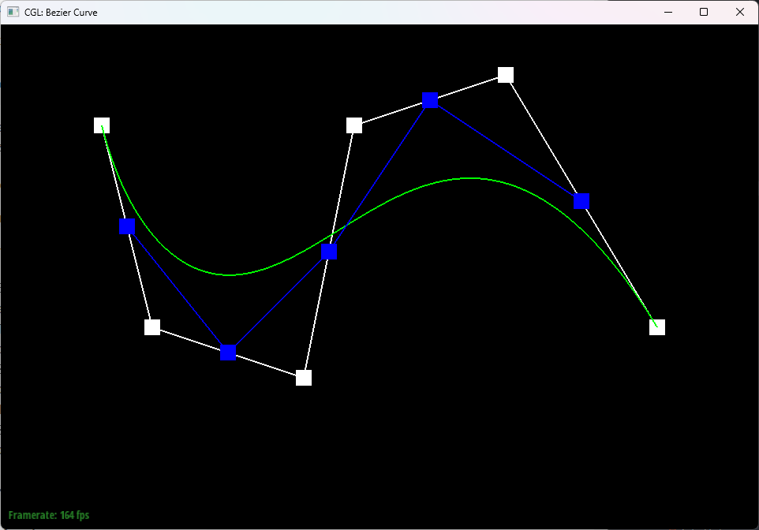
|
|
|
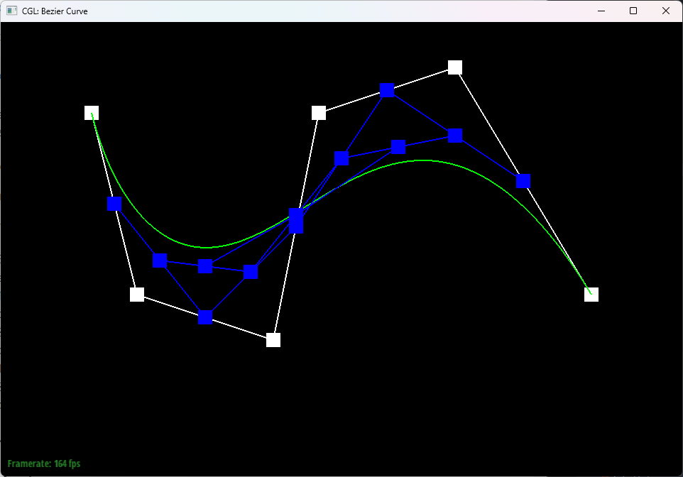
|
|
|
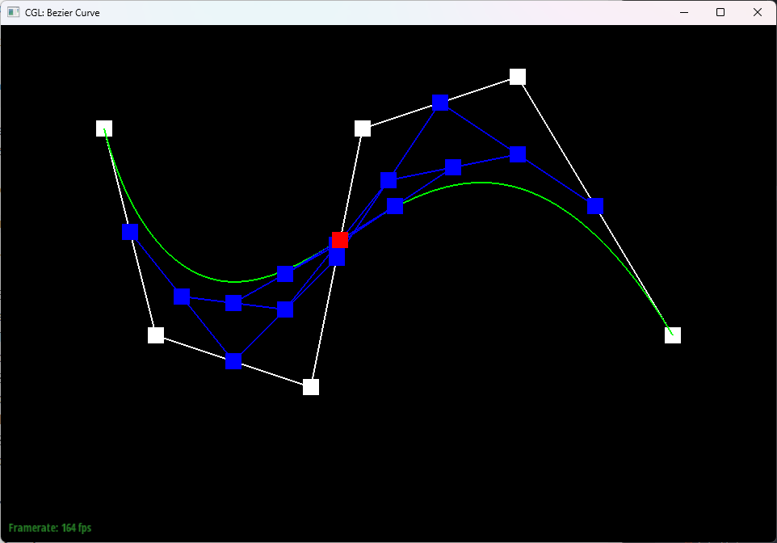
|
Show a screenshot of a slightly different Bezier curve by moving the original control points around and modifying the parameter \(t\) via mouse scrolling.
|
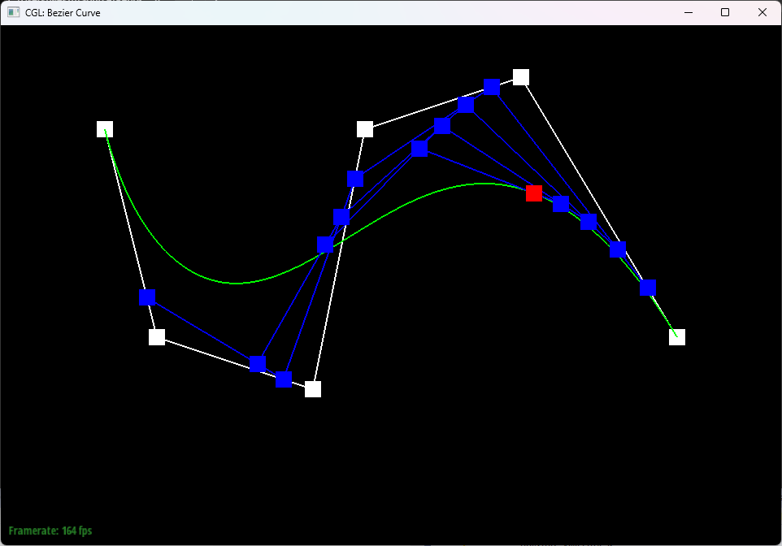
|
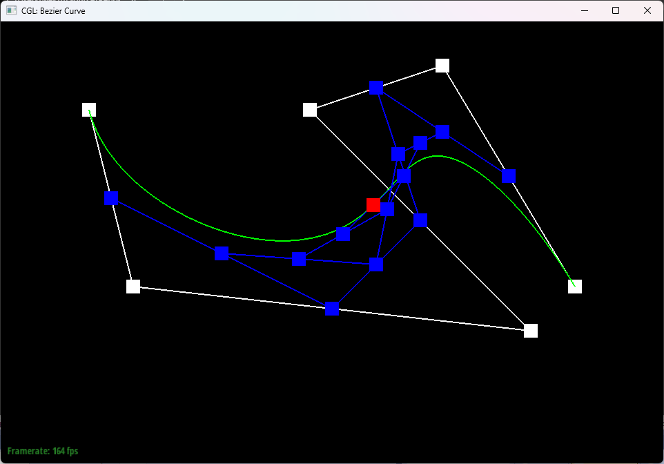
|
Part 2: Bezier Surfaces with Separable 1D de Casteljau
Briefly explain how de Casteljau algorithm extends to Bezier surfaces and how you implemented it in order to evaluate Bezier surfaces.The algorithm is used to first evaluate the bezier curves along one axis to be used as control points for the bezier curve to be evaluated on the other axis. It was implemented in a similar manner to the Bezier curve case with a evaluateStep function to help evaluate recursive stages of the de Casteljau's algorithm. Then an evaluate1D function was implemented to use the evaluateStep function until left withonly a single result point from a list of bezier control points. Finally, implementing the evaluate function to obtain the bezier control points along one axis with u and finding the resultant point along the defined bezier curve in the other axis.
Show a screenshot of bez/teapot.bez (not .dae) evaluated by your implementation.
Section II: Triangle Meshes and Half-Edge Data Structure
Part 3: Area-Weighted Vertex Normals
Briefly explain how you implemented the area-weighted vertex normals.We iterate through the triangles neighboring the vertex and calculate the cross product of the two edge vectors incident on our vertex. We sum these resultant crossproducts divided by 2 over all the neighboring triangles and normalize the final vector sum. This works in calculating the area-weighted vertex normal because the cross product of two edges along a triangle divided by 2 is in the direction of the normal with magnitude matching the area. This allows it to inherrently encode the normal vector and its weight for each neighboring triangle.
Show screenshots of dae/teapot.dae (not .bez) comparing teapot shading with and without vertex normals. Use Q to toggle default flat shading and Phong shading.
|
|
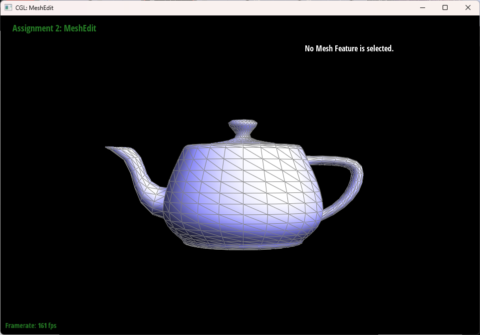
|
|
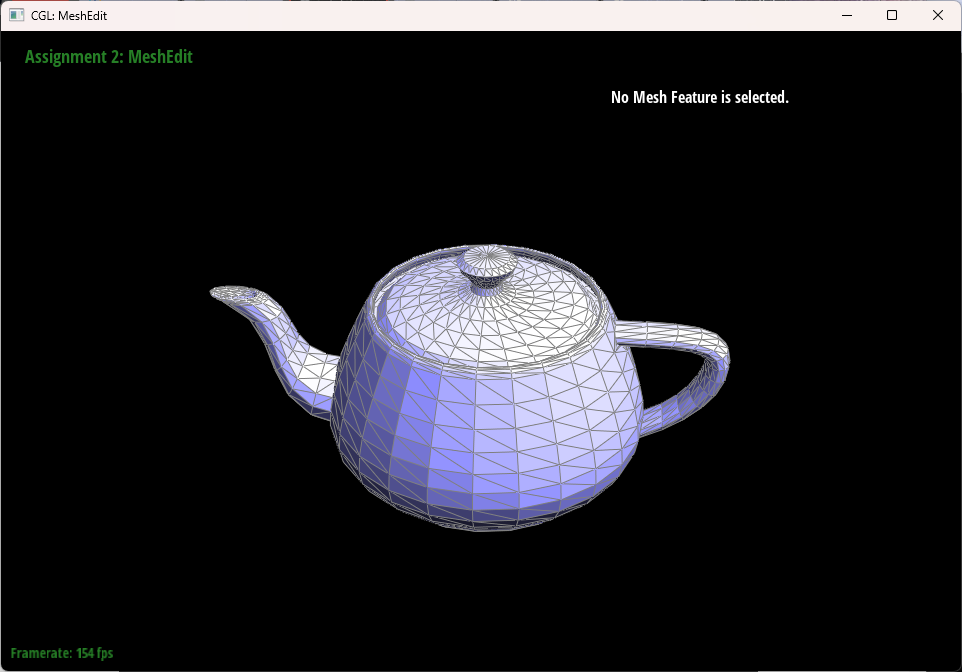
|
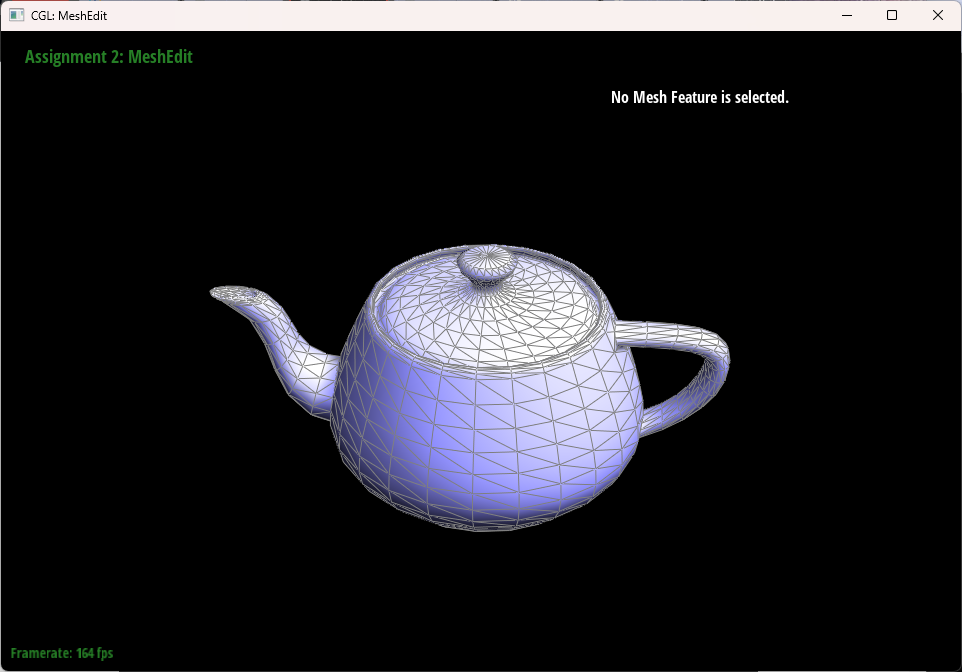
|
Part 4: Edge Flip
Briefly explain how you implemented the edge flip operation and describe any interesting implementation / debugging tricks you have used.
First of all, I defined all of the 10 halfedges, 4 vertices, 5 edges, and 2 faces defined in the original triangle
pair.
It becomes a problem of setting new neighbors and faces correctly.
Triangle abc will have half edges h1, h2, h3 inside the triangle and h4, h9, h10 outside the triangle.
Triangle cbd will have half edges h4, h5, h6 inside the triangle and h7, h8, h1 outside the triangle.
As we flipped edge (c, b), we have to change the next and face for the half edges, and reassign the correct
half edges to the edges, points, and faces.
h1->setNeighbors(h6, h4, a, e3, f1);
h6->setNeighbors(h2, h7, d, e4, f1);
h2->setNeighbors(h1, h10, c, e1, f1);
h4->setNeighbors(h3, h1, d, e3, f2);
h3->setNeighbors(h5, h9, a, e2, f2);
h5->setNeighbors(h4, h8, b, e5, f2);
half edges h1, h2 and h6 will belong to the upper triangle (f1) and h3, h5, h4 will belong to the lower triangle
(f2).
outer half edges have different faces, and flipping an edge will not change their next value.
For debugging tricks, I found it helpful to draw out the triangle first, and assign variable names for all the
verticies, edges, and faces.
I also made the assumption that calling halfedge on e0 will yield the halfedge on the left. Even if it yields the
hlafedge on the right, by symmetry,
our implementation will still work. A small implementation detail was realizing that the outer half-edges of the
verticies (h7, h8, h9, h10) do not need to be
set new neighbors as flipping a edge won't affect them.
Show screenshots of the teapot before and after some edge flips.
|
|
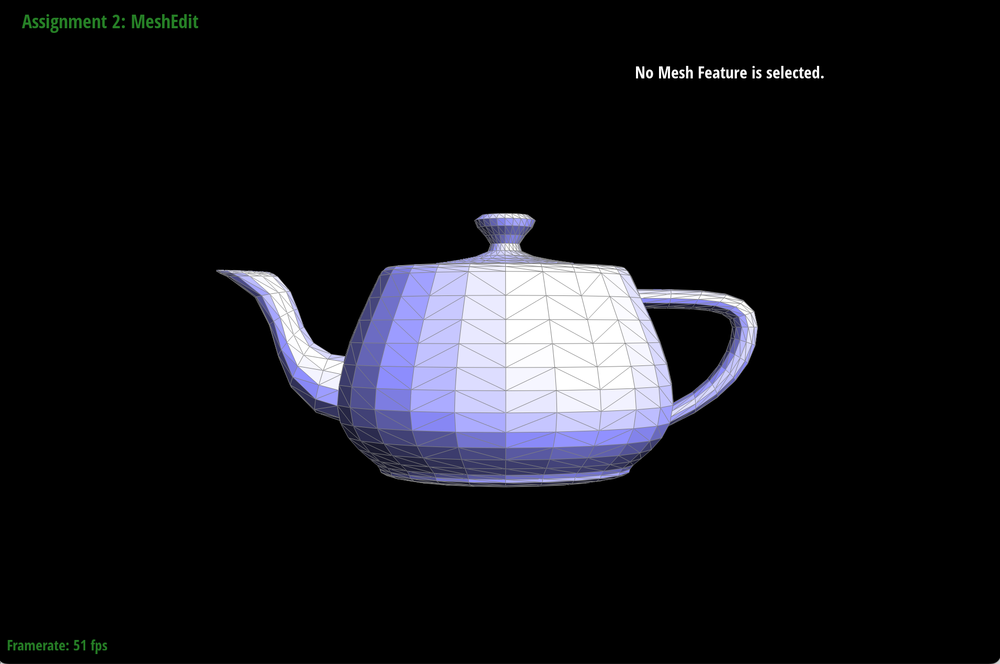
|
Write about your eventful debugging journey, if you have experienced one.
No eventful debugging journies.
Part 5: Edge Split
Briefly explain how you implemented the edge split operation and describe any interesting implementation / debugging tricks you have used.
Implementation details was very similar to edge flip, but we have to define 6 new half-edges, 3 new edges, 2 new
faces, and 1 new vertex.
For splitting edges, we have to set new next, twin, vertex, edge, and face values to half edges.
h1->setNeighbors(h2, h16, m, e3, f1);
h2->setNeighbors(h11, h10, c, e1, f1);
h11->setNeighbors(h1, h12, a, e7, f1);
h13->setNeighbors(h12, h4, b, e6, f3);
h12->setNeighbors(h3, h11, m, e7, f3);
h3->setNeighbors(h13, h9, a, e2, f3);
h4->setNeighbors(h5, h13, m, e6, f2);
h5->setNeighbors(h14, h8, b, e5, f2);
h14->setNeighbors(h4, h15, d, e8, f2);
h15->setNeighbors(h6, h14, m, e8, f4);
h6->setNeighbors(h16, h7, d, e4, f4);
h16->setNeighbors(h15, h1, c, e3, f4);
An interesting detail is we do not have to set new neighbor values to the outer half edges, since their faces,
points, nor edges does not change.
After setting the half edges, we can set the correct half edges to all the points, edges, and faces.
e1->halfedge() = h2;
e2->halfedge() = h3;
e3->halfedge() = h16;
e4->halfedge() = h6;
e5->halfedge() = h5;
e6->halfedge() = h13;
e7->halfedge() = h11;
e8->halfedge() = h15;
a->halfedge() = h3;
b->halfedge() = h5;
d->halfedge() = h6;
c->halfedge() = h2;
m->halfedge() = h1;
f1->halfedge() = h2;
f2->halfedge() = h4;
f3->halfedge() = h12;
f4->halfedge() = h16;
A final detail is, when calculating the midpoint, the half edges are oriented so that edge c, b is split edge.
We calculate a new midpoint M where
m->position = (float)0.5 * c->position + (float)0.5 * b->position;
Debugging tricks I used were the same as the previous problem. I drew out the triangle and assign variable names
for all the
verticies, edges, and faces.
I also made the assumption that calling halfedge on e0 will yield the halfedge on the left. Even if it yields the
hlafedge on the right, by symmetry,
our implementation will still work.
Show screenshots of a mesh before and after some edge splits.
|
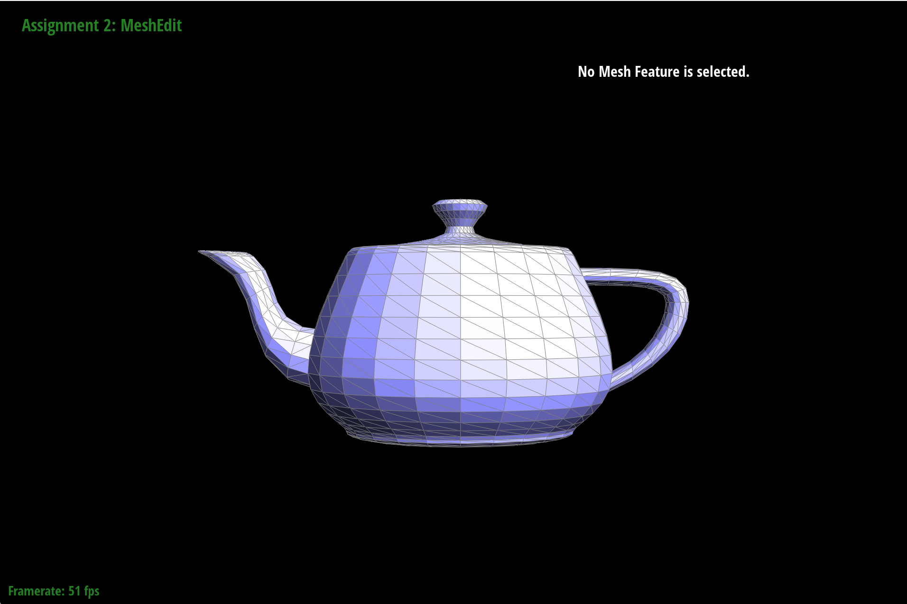
|

|
Show screenshots of a mesh before and after a combination of both edge splits and edge flips.
|
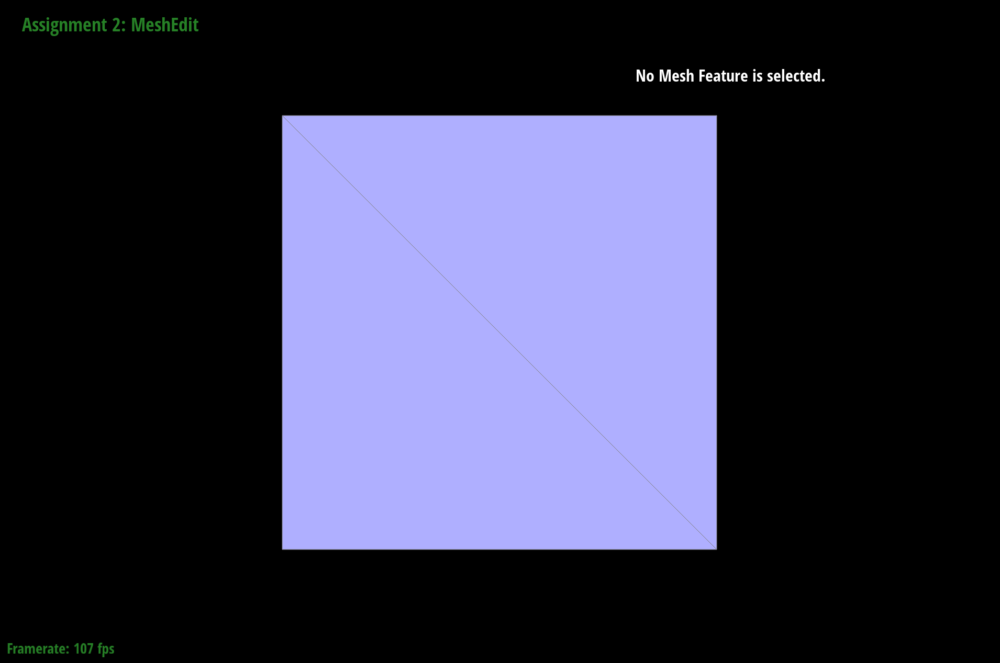
|
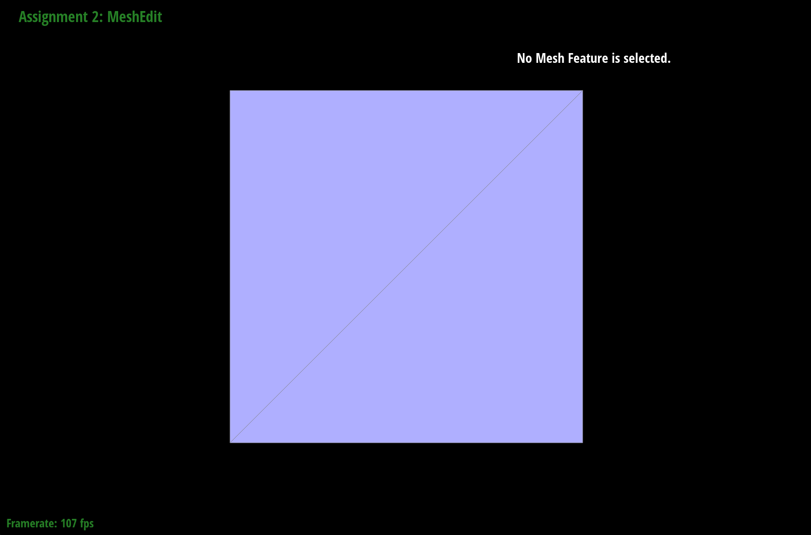
|
|
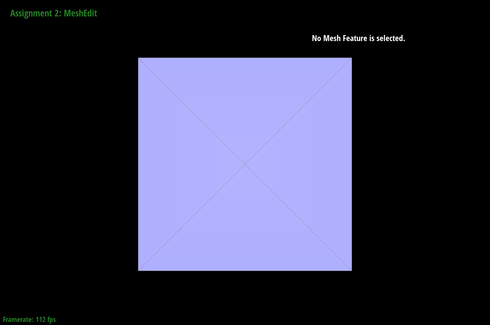
|
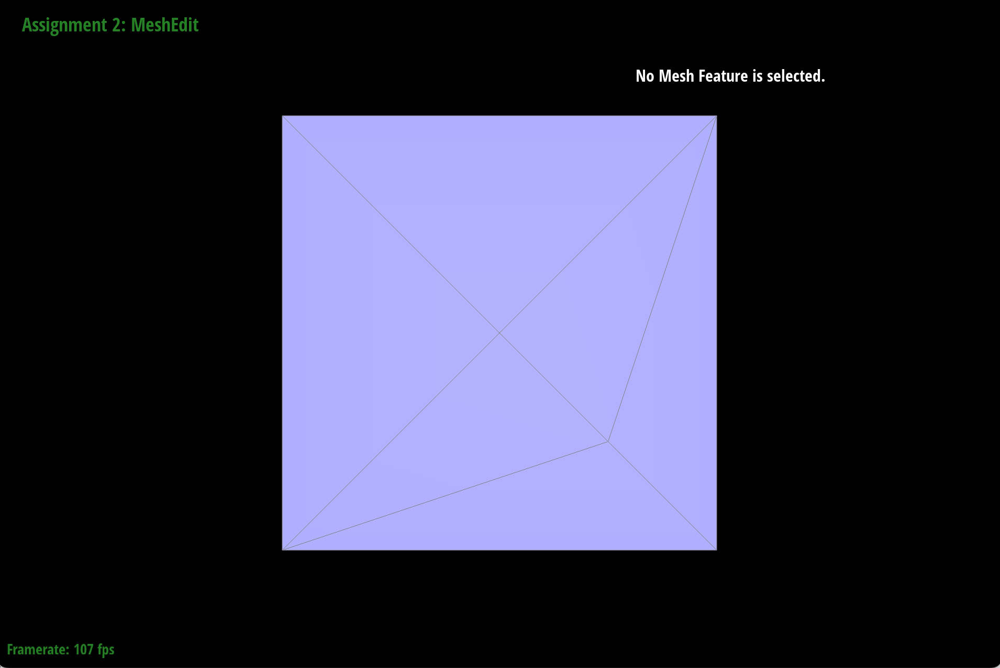
|
|
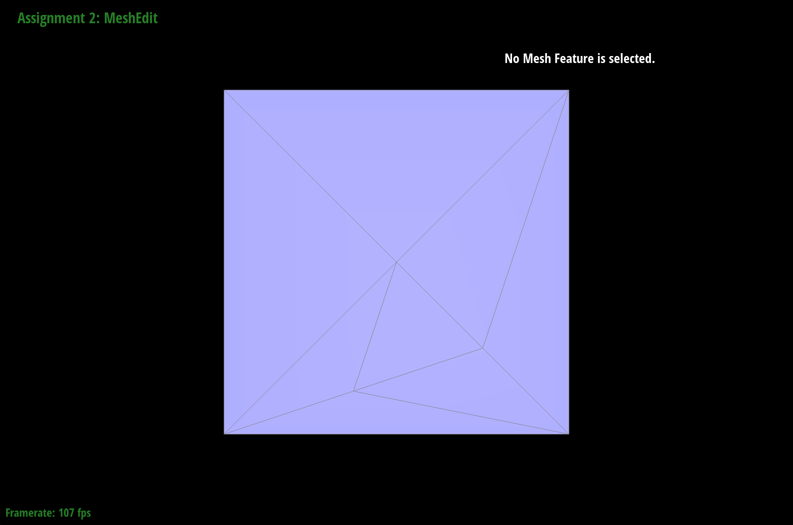
|
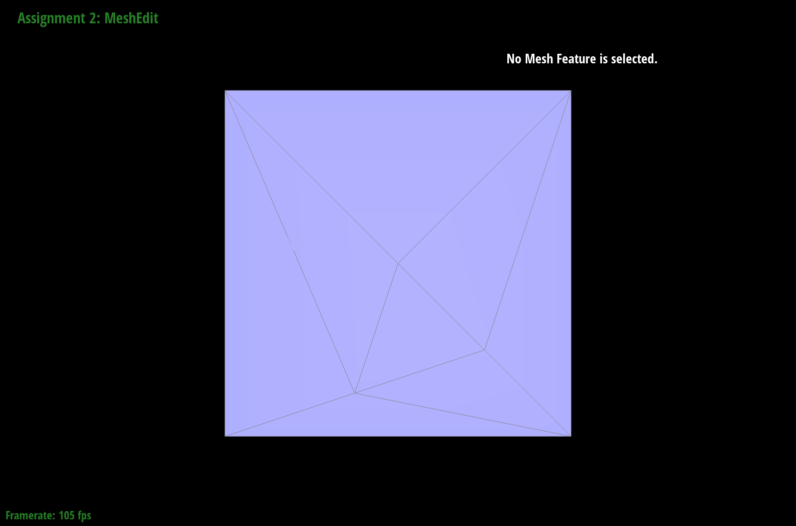
|
Write about your eventful debugging journey, if you have experienced one.
No eventful debugging journies
If you have implemented support for boundary edges, show screenshots of your implementation properly handling split operations on boundary edges.
No support for boundary edges
Part 6: Loop Subdivision for Mesh Upsampling
Briefly explain how you implemented the loop subdivision and describe any interesting implementation / debugging tricks you have used.
We first iterated through all the exisintg verticies of the mesh, marked them as old vertices, and calculated
their new position.
Here, we had to calculate the centeroid value of the vertices. I thought the computeCentroid() function was
implemented, but it was not.
We had to manually loop through half edges and vertices to sum up all the positions.
vert->newPosition = (float)(1-n*u) * vert->position + (float)u * vert->centroid;
We then looped through all the existing edges to find the position for our new vetex. Since we are splitting each
edge, for meshes without boundaries,
all edges will have a new vertex assigned to it. We also add the old edges into a vector. When we start splitting
edges, new edges will be created.
We want to have a way to only iterate our old edge.
We will just iterate through the old edge list when splitting edges. To find edges to flip later (connecting old
point -> new point or new point -> old point),
we can mark which edges are newly created by splitting, and which are old. Old edges will just be connecting old
points to old points, hence we can just skip over them.
Finally, we will flip all new edges, if it is a pair where there is one new point and one old point.
An interesting implementation trick we used is instead of having a complex for loop when checking for edges with
new/old vertex pairs, we just XORed their boolean values
if (edge->isNew && (edge->halfedge()->vertex()->isNew ^ edge->halfedge()->twin()->vertex()->isNew)) {
mesh.flipEdge(edge);
}
This helped with readability and shortened our code.
When we first loaded the cube file, we noticed that the original vertices were not moving correctly. We checked
how we computed the centeroid, and we realized
we were casting an variable to an integer, which was causing the minor vertex adjustment to be rounded back up. It
took us a while to debug this, and we learned to
always work with decimals in the future.
Take some notes, as well as some screenshots, of your observations on how meshes behave after loop subdivision. What happens to sharp corners and edges? Can you reduce this effect by pre-splitting some edges?
Observing the effect of loop subdivision on the beetle.dae model we see a few interesting situations. Firstly the sharp corners like that in the corner of the window get unnecessarily rounded out. Also in the case of edges, like that of the verticle frame of the window, the geometry is undesirably shrunk. Both of these effects can be reduced by pre splitting the edges. For the issue of sharp corners, edges incident on a corner intended to be sharp can be presplit witha resultant new vertex as close as possible to them. In the case of edges, all the edges incident to that edge which aren't part of it can be split to form a layer of edges as close as possible to the original sharp edge. sharp
|
|
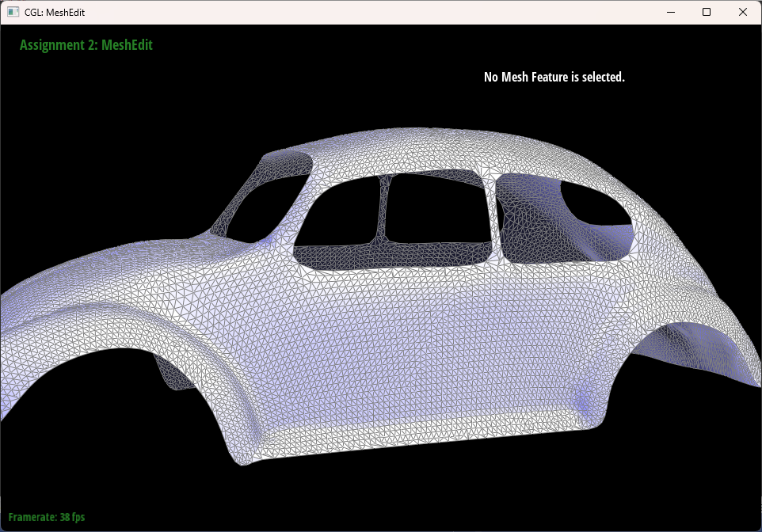
|
|
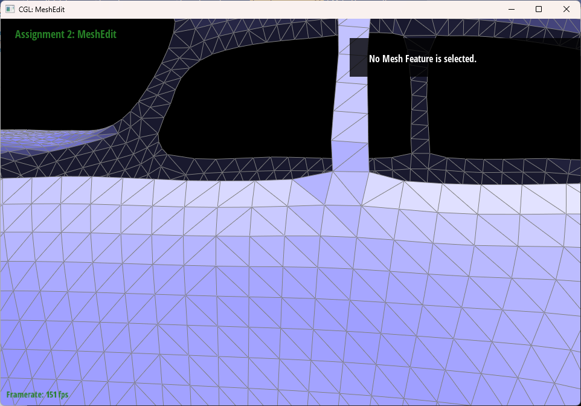
|
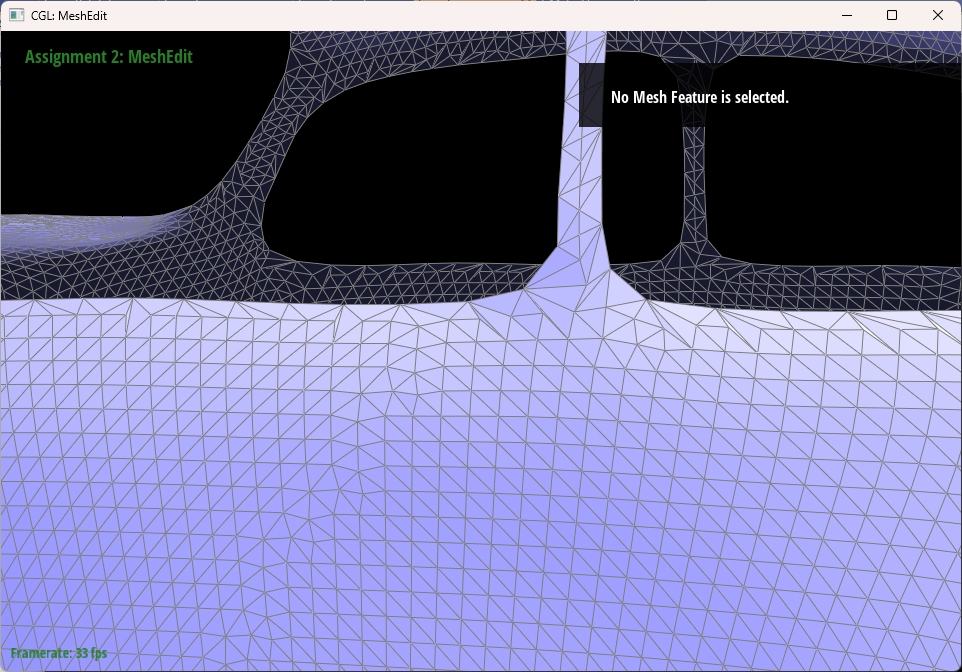
|
Load dae/cube.dae. Perform several iterations of loop subdivision on the cube. Notice that the cube becomes slightly asymmetric after repeated subdivisions. Can you pre-process the cube with edge flips and splits so that the cube subdivides symmetrically? Document these effects and explain why they occur. Also explain how your pre-processing helps alleviate the effects.
|
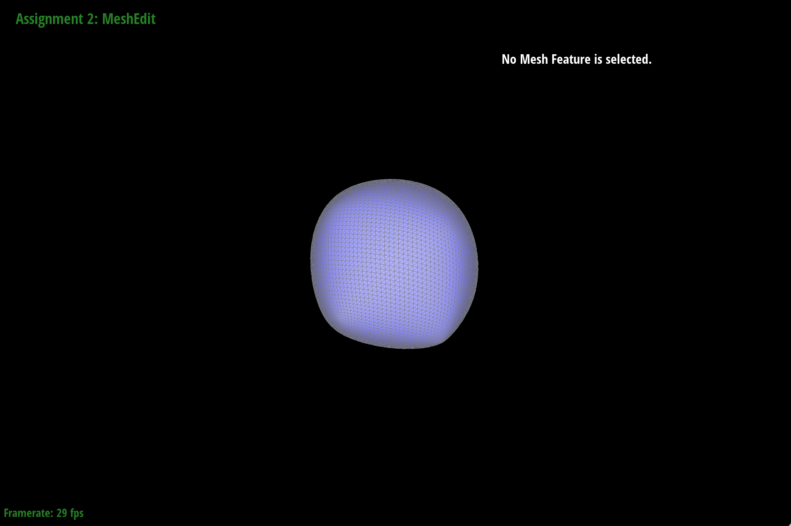
|
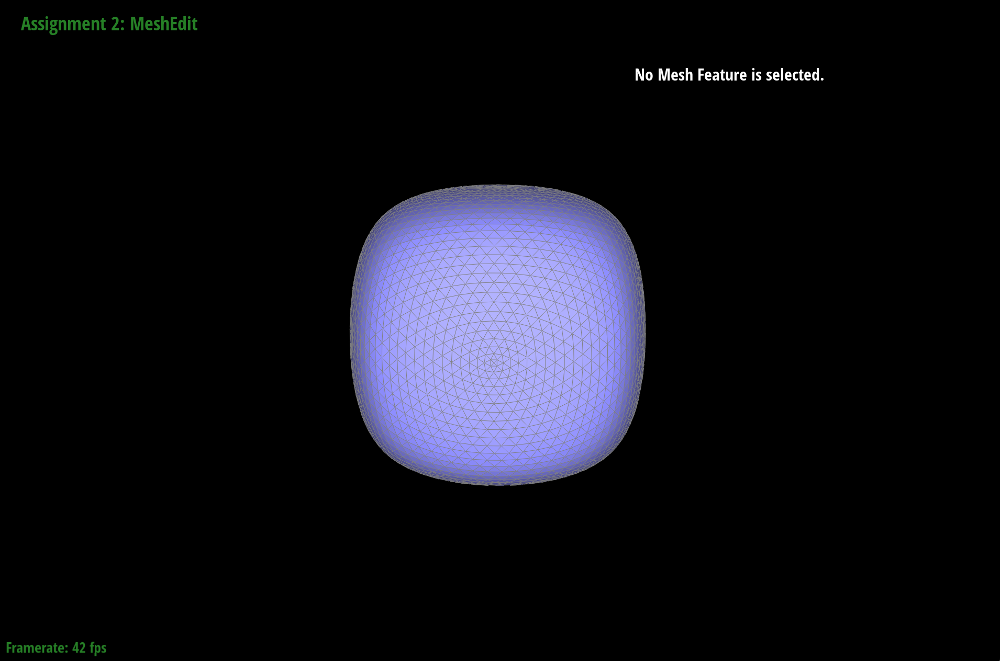
|
To get the cube to subdivide symmetrically, I split every diagonal edge in the cube. I realized that each original
vertex in the cube didn't have the same degree.
Some vertices had a degree of 3 while others had a degree of 5. The asymeetry happens since when you shift the old
vertices, if a vertex has degree 3, u will be 3/16.
If the degree is 5, u will be 3/(8*5). Since we shift each vertex by the ratio of u times the neighbor_vertex_sum,
the original vertices will be shifted unevenly as a function
of what edges are connected to it and with an unequal value of u. Even though the u value is supposed to divide
out the contribution of all the neighboring vertices,
A vertex lacking contribution from a certain vertex by lacking an edge means the original vertices will be shifted
unevenly, and the shape will be contorted as we subdivide.
By splitting every diagonal edge, we ensure each vertex of the original cube has a degree of 6, with
orientationally shifted, but same magnitude edges. Hence, as we subdivide,
all the original points will be shifted by the same amount.
If you have implemented any extra credit extensions, explain what you did and document how they work with screenshots.
NO EC
Part 7 (Optional, Possible Extra Credit)
Save your best polygon mesh as partsevenmodel.dae in your docs folder and show us a screenshot of the mesh in your write-up.YOUR RESPONSE GOES HERE
Include a series of screenshots showing your original mesh and your mesh after one and two rounds of subdivision. If you have used custom shaders, include screenshots of your mesh with those shaders applied as well.
YOUR RESPONSE GOES HERE
Describe what you have done to enhance your mesh beyond the simple humanoid mesh described in the tutorial.
YOUR RESPONSE GOES HERE